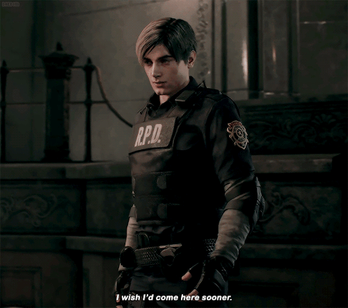
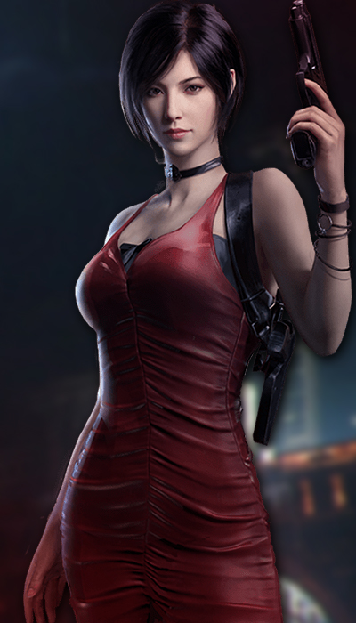

Conceito
A história de Resident Evil 2 Remake se inicia praticamente da mesma forma. Leon Kennedy é um jovem policial que, logo no seu primeiro dia de trabalho, se depara com uma série de problemas, como uma cidade devastada e infestada de zumbi (quem nunca?). Já Claire Redfield, está em busca de seu irmão Chris (protagonista do primeiro jogo) que está desaparecido já faz um tempo. Ambos acabam indo parar em um dos poucos lugares "seguros" de Racoon City: a delegacia de polícia.
O desenrolar de toda essa trama é basicamente o mesmo para quem jogou o título em sua primeira versão. Mas, para espanto de todos nós, há uma série de surpresas ao longo do jogo que, mesmo alterando alguns pontos da história, faz com que o game tenha uma cara diferente. E acreditem, todas elas foram inseridas cirurgicamente de uma maneira que até mesmo o fãs mais críticos não irão se desapontar.
Também é interessante ver como a Capcom mesclou esses elementos velhos e novos em um dos grandes carros-chefes de Resident Evil 2: suas cenas de animação. Por exemplo, a icônica cena do caminhão, que divide os personagens no prólogo do jogo, mantém a mesma ideologia, mas ganha ares mais dramáticos. O mesmo vale para outras ao longo do enredo, inclusive ao se deparar com outros personagens e criaturas.
Porém, confesso que fiquei decepcionado com a forma com que os roteiros dos personagens se dividem. Curiosamente, agora estão mais similares do que na versão original, fazendo com que na primeira hora, praticamente seja o mesmo percurso para Leon ou Claire. Porém, depois do primeiro quarto de jogo, as coisas mudam e os caminhos seguem enredos diferentes, se aproximando novamente na parte final.

Mudanças Visuais

Se tratando de um jogo feito há quase 21 anos, Resident Evil 2 Remake obrigatoriamente precisava vir como gráficos atuais. A Capcom já traz uma boa experiência em relação ao assunto, como no caso do primeiro Resident Evil que, ainda na geração 128 bits, ganhou novos gráficos, tornando-se praticamente um jogo novo.
O avanço da tecnologia só fez bem a Resident Evil 2 Remake. Me arrisco a dizer que, se este game fosse produzido no mesmo período em que o primeiro capítulo foi refeito, o trabalho não seria tão aclamado. Principalmente em relação a qualidade visual e efeitos de luz e sombra. O jogo pode não ser tão assustador quanto RE7, mas ainda sim é de tirar bons sustos. Eu conto em torno de umas seis vezes em que dei um pulo da cadeira diante de alguma surpresa. Acredite, você pode ser a pessoa mais precavida do mundo, e assim mesmo vai se assustar em algum momento
E esses momentos só ganham um ar ainda mais desesperador justamente por essa ambientação muito mais sombria de RE2 Remake. Os corredores de quase toda a delegacia são pouco iluminados, sendo a sua lanterna a única fonte de luminosidade da área. Além disso, na época, era fácil distinguir um elemento que não era do cenário, como zumbis caídos e janelas que se quebram. Com esse novo visual, a qualquer momento uma criatura pode surgir de uma porta, teto ou de qualquer parte possível, sem qualquer forma de premeditar essa ação. Outro ponto interessante é que quando os personagens usam algum tipo de artefato explosivo, consequentemente o ataque cria uma chama que, além de ser muito bem reproduzida, ilumina bastante a área afetada.
Spoilers (Leon)
Se tratando da campanha do Leon, após salvar Ada nos esgotos, ele vai ao laboratório, onde enfrenta o Doutor Birkin na sua segunda forma, após derrota-lo, Annette Birkin diz a Leon que Ada Wong não é uma agente do FBI e sim uma mercenária contratada para roubar o vírus e depois vende-lo para quem pagar mais.
Leon então vai ao encontro de Ada, que confirma a história e aponta uma arma para o protagonista. Leon aponta uma arma de volta e dá voz de prisao para Ada que hesita em atirar, nesse momento, a plataforma onde os dois estão começa a Desmoronar e Annette aparece e atira no ombro de Ada. A plataforma é destruida e Ada quase cai. Ela fica apoiada apenas em Leon, que a tenta puxar, enquanto isso duas coisas importantes acontecem: Annette morre e a amostra do Vírus que Leon carregava cai e é destruída.
Leon tenta segurar Ada mas não consegue, e a mercenária cai para a "morte". Depois, na luta final contra MR.X, Ada (sem Leon saber) aparece e da uma RPG-7 para o protagonista finalizar a batalha. Os dois voltariam a se encontrar em Resident Evil 4
Spoilers (Claire)
Se tratando da campanha da Claire, o final é bem mais emocionante. Quando Claire vai ao estacionamento da delegacia, ela vê Sherry Birkin (Sim, filha de Annette Birkin) sendo raptada e vai atrás da garota. Ela passa por um orfanato e por um esgoto, e percebe que a garota foi infectada com o "G vírus", sabendo disso, ela vai ao laboratório em busca de uma cura. Depois de achar a cura e voltar até a sala onde havia deixado Sherry, Claire se depara com Annette encostada na cama onde sua filha está.
Uma cena emocionante ocorre, onde uma das cientistas que criou o vírus que infectou sua filha tenta se redimir. Antes de morrer, Annette entrega para Claire um cartão que dá acesso total ao laboratório, para que ela e Sherry consigam escapar com facilidade. Indo para o trem que seria usado para escapar, o Doutor Birkin novamente aparece em sua terceira forma e Claire o enfrenta. Depois de derrota-lo ela e Sherry se encontram com Leon e fogem do laborátorio.
Spoilers (Final Alternativo)
Resident Evil 2 possui uma campanha B, que muda a localização de alguns itens e a posição de alguns inimigos, e nessa campanha temos o final verdadeiro do jogo, que é o mesmo para os dois personagens.
Jogando a campanha B, após derrotar o chefe final (Para o Leon é o Mr.X, para a Claire é o Dr. Birkin na sua quarta forma) e ir para o trem que te levará para fora do laboratório, Dr. Birkin volta em sua quinta e última forma. Ele fica posicionado no fim do vagão e vem engolindo tudo, seu objetivo é impedir que ele chegue até você.
Depois de mata-lo, aparece uma cena com Leon, Claire e Sherry andando de mãos dadas por uma rua deserta.